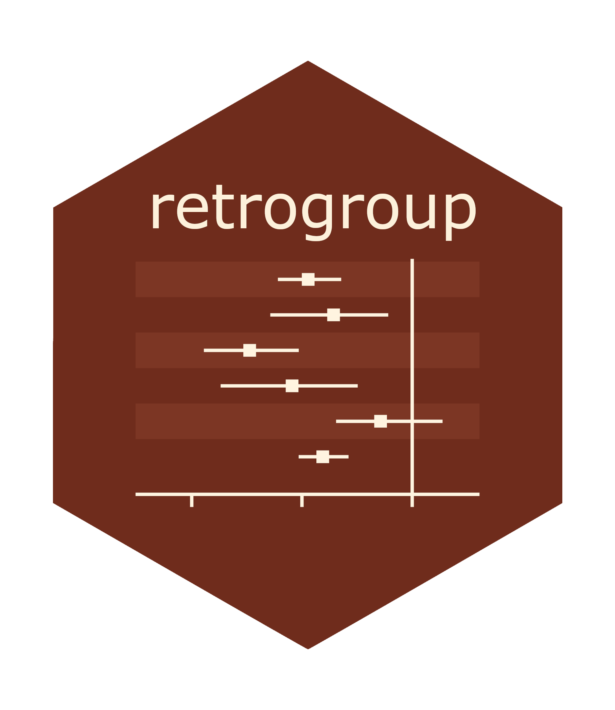

Example summary subgroup statistics
Source:R/group_example_summary.R
group_example_summary.RdReturn example summary subgroup statistics in the format
expected by group_data_summary().
Value
A tibble with one row per subgroup level and the following columns:
variable: character, name of the subgroup variable.level: character, level of the subgroup variable.patients: integer, number of patients in the subgroup level.log_hazard_ratio: numeric, estimated log hazard ratio of treatment versus control in the subgroup level.standard_error: numeric, standard error of the log hazard ratio.
Details
The statistics are computed from the same patients as
group_example_patient(): the death endpoint (etype == 2) of the
adjuvant colon cancer trial of levamisole plus fluorouracil
(Moertel et al., 1990), as distributed in survival::colon,
restricted to the observation ("Obs", control) and levamisole plus
fluorouracil ("Lev+5FU", treatment) arms.
There are three subgroup variables:
"age": age at randomization, with levels"under 60"(younger than 60 years) and"60 or over"(60 years or older)."node4": more than 4 positive lymph nodes, with levels"no"and"yes"."sex": with levels"female"and"male".
Within each subgroup level, group_analysis_summary() fits a Cox
proportional hazards model of survival on treatment ("Lev+5FU"
versus "Obs") to get the log hazard ratio and its standard error.
The standard error is on the log hazard ratio scale,
not the hazard ratio scale.
References
Moertel CG, Fleming TR, Macdonald JS, et al. (1990). Levamisole and fluorouracil for adjuvant therapy of resected colon carcinoma. New England Journal of Medicine, 322(6), 352-358.
See also
Other example:
group_example_patient()
Examples
group_example_summary()
#> # A tibble: 6 × 5
#> variable level patients log_hazard_ratio standard_error
#> <chr> <chr> <int> <dbl> <dbl>
#> 1 age under 60 280 -0.169 0.178
#> 2 age 60 or over 339 -0.546 0.160
#> 3 node4 no 453 -0.417 0.153
#> 4 node4 yes 166 -0.312 0.190
#> 5 sex female 312 -0.147 0.162
#> 6 sex male 307 -0.656 0.179